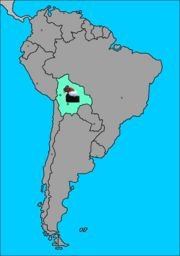

De: La Frikipedia, la enciclopedia extremadamente seria.
De: La Frikipedia, la enciclopedia extremadamente seria. De: La Frikipedia, la enciclopedia extremadamente seria.
| De la serie Países del planeta tierra: | |||||
| Estado plutrinacional, multiétnico, polifacético, folclórico y tutti-fruti de Evotopía | |||||
|---|---|---|---|---|---|
| |||||
| Lema: Coca no es cocayna | |||||
| Himno: Coca quiero, quiero coca y mar!!!
| |||||
| 
Justo en medio y sin mar | |||||
| [[ |
La Paz de Evo, La Pas...ta Base | ||||
| Mayor ciudad | Ciudad del Mar | ||||
| Lenguas oficiales | Quechua, tawantisuyo, coyasuyo, estoessuyo, tuyotambien, español, español boliviano, HOYGAN | ||||
| Gobierno | Centralismo cocaínico | ||||
| Mayor plantador de coca | Huevo Morales | ||||
| Área | Alto, Recto y plano | ||||
| Población | miles (en metros de altura) | ||||
| Moneda | Conchas | ||||
| Zona horaria | siempre de día | ||||
| Dominio Internet | .evo | ||||
| Código telefónico | llama_que_llama
| ||||
| Es el único país en el que se puede traficar droga legalmente (pero sólo coca) | |||||
Aqui no hay Bolivianos Para ver bolivianos vease Bolivialandia
El Estado plutrinacional, multiétnico, polifacético, folclórico y tutti-fruti de Evotopía es un estado fallido ubicado en el centro del punto de mira del capitalismo carnicero explotador mundial de Sudamérica y colinda con los países de Brasil, Argentina, Shile, Paraguay, Perú, Polonia e Israel, cada uno de los cuales le ha quitado algo, los cinco primeros territorio y los dos últimos el título del país mas despedazado de la historia (Polonia) y el título del pueblo mas pisoteado de la humanidad (Israel) por cumplir con la regla cartesiana de que Bolivia no puede quedar primero en nada.
Fue descubierta por Kamchatka hasta Roma.
El plan macabro para conquistar el mundo que han ideado los druidas y Etiopía, Sudán, especialmente).
El "país" fue creado por Simón Bolívar, luego de tener un berrinche frente al Imperio Español y los peruanos (a quienes pertenecía Bolivia mientras existía), cuando se negaron a darle el monopolio de los deportes de montaña. Cuando vió amenazada su posición de niño rico dueño del esquí sobre arena, decidió separarla del Perú, para crear un Estado sin defensas reales, sustentado en los bares de estriptís, la coca y guerrear con naciones más poderosas, como Inglaterra o lo que es lo mismo su base sudamericana de Shile. Por ponerlo de modo amigable, Bolívar, alias "El Liberéitor" (no confundir con el Governéitor), dejó una nación que apenas subsistía para ser luego pisoteada por Chuck Norris, con quien había hecho una apuesta. Al perder una competencia de respirar bajo el fuego producido por uno de sus volcanes, no quiso pagarle un trago, lo cual provocó la ira de Chuck. Este se despidió diciendo "Yo volveré", con lo cual Bolívar se rió, pero murió de tristeza porque no presenció la segunda venida de Chuck.
A su llegada dijo que dejaría en paz al territorio si le entregaban a un millón de alpacas como tentempié. Como no las prepararon a su gusto, reaccionó con violencia, bebiendo el mar que tenían y haciéndoles quedar sin costa, con lo cual los chilenos llegaron hasta la capital ayudados por Chuck (nunca logrado por nadie más), y bailaron una cueca, lo cual les hizo lanzarse de cabeza del altiplano al mar, conservando desde entonces su estatura mínima y su cabeza achatada.
Hoy en día, desde su capital Puerto Evo, planean anexar al Estado Vaticano, para lograr quitarle al Papa el edificio que le regaló Batman (originalmente Bati-Cano) y conspirar junto a los judíos para colocar Coca sin cola en cada escuela del tercer mundo los viernes por la mañana. La amistad de Evo con Huguito le dará el petróleo para los camiones que la transportarán y su venganza contra Chuck nunca podrá consumarse, a menos que quieran llegar hasta la Edad de Piedra con una patada giratoria.
Hay que recordar que los bolivianos son la única especie de humanos que son inmunes a los efectos de la cocaína y con sus exportaciones planean dominar el mundo antes que Bill Gates y Coruscant, debido a que la conexión a internet es muy débil por la altura del país y sencillamente no se pueden conectar, lo que los mantiene a salvo y pueden desarrollar sus planes de forma más eficiente y lo más importante ¡sin cuelgues!
El país es atravesado por la parte mas ancha de la cordillera de los Andes (razón por la cual los bolivianos nacemos jodidos) y esta desciende en forma de escalerita de dominós hasta las llanuras del este, mas conocidas como Cambalandia y concluyendo así las tres climas principales regiones del país Altiplano, Valles y Llanos.
Parte del país atravesada por la cordillera de los Andes (y por lo tanto, la más jodida) aquí la cordillera se parte en dos quedando en medio una superficie plana y compacta llamada Altiplano, en la cual viven desperdigados los habitantes occidentales del país conocidos como Collas (Coshas en Argentina y Coyas en Chile) en esta región lo suficientemente fría como para que se te congelen los mocos y lo suficientemente seca para escupir en polvo, se encuentran los lagos titiCACA y POOPÓ conectados entre sí por el río DESAGUADERO (no, no es chiste) lo cual te hace pensar en quien se dedicó a ponerles esos nombres de mierda. Esta es la región de la cual proviene huEvo Morales.
Forma de vida más inteligente: las llamas.
Parte que está entre los llanos y el altiplano que no es una cosa ni la otra, sino todo lo contrario, por lo general se llama a sus habitantes vallunos aunque para los Cambas todo los que estén mas arriba de Vallegrande (un pueblo chico) son collas.
Forma de vida más inteligente: los loros.
Enorme extensión de planicie verde habitada por árboles y mosquitos, es bonito de ver pero imposible de vivir, con un calor infernal, una humedad ambiental relativa del 150% (los peces nadan por el aire) y arena que se te mete hasta por el culo entre la ropa. Está habitada por personas lo suficientemente flojas como para no irse a vivir a otra parte llamadas Cambas (en efecto, los cambas son los bolivianos que menos emigran por lo que son un tipo de boliviano muy poco conocidos fuera del país).
Forma de vida más inteligente: los mosquitos.
Mas conocido como el chaco boliviano, lo habitan unas personas llamadas chaqueños y mas allá de las lejanas menciones de la guerra del chaco o de las sequias periódicas nadie se acuerda de ellos. El lema de los chaqueños es “Ni camba ni colla, camireño carajo” pero eso a los cambas y a los collas les importa una mierda.
Forma de vida más inteligente: el mosquito chaqueño.
Bolivia cuenta con enormes reservas de litio, estaño, sodio, hierro, oro, plata, bauxita, pirita, kriptonita y adamantium. Una variedad de zonas climáticas que varían de la Tundra mordoreña a la selva tropical togolesa, en la los cuales viven tropecientas especies de bicharrajos entre los que destacan: el iguanodonte rosa, el plesiosaurio del titiCACA y la rara lagartija boliviana que come palomas que apareció en un capitulo de los Simpson y que ha sido una de las pocas menciones del país sudamericano en esta serie de culto norteamericana.
La enorme riqueza natural del país más pobre de Sudamérica es contrarestada por su principal e irremediable problema económico: los bolivianos.
Al inicio habia un país que tenia mar, pero Shile (rotos) les declaro la guerra, ellos (los bolivianos collas y cholos peruanos) se armaron de valor y juntaron 300 Bolivianos para combatir, pero al llegar a la costa se fueron de ilegales a Argentina y otros se ahogaron en el mar pensando que era una piscina . Luego de perder su mar, una papita Lay cobro vida y se volvio presidente y sale en fotos con Hugo Chaveta.
Tras la guerra de peru anos y bolivi anos conta Chile, los collas se reunieron nuevamente y entraron en guerra contra Brasil y los brasileros al ritmo de samba les rompieron también el culo (ocote) quedándose con el Acre (ya un borracho boliviano le habia regalado a Brasil la mitad del Acre por un caballo blanco).
Tras perder una guerra contra Shile y otra contra Brasil se dijeron "¡la terecera es la vencida!" los bolivianos le declararon la guerra a Paraguay ¿y qué pasó? qu el pequeño estado paraguayo les rompio el ocote a los collas.
El sistema de enseñanza en Bolivia ha sufrido varios cambios a lo largo de la historia, los cuales se hacen evidentes en el problema del saco de papas.
La moneda de Bolivia se llama Boliviano, pero como los bolivianos cambas se quedan traumados y en tance con las novelas mexicanas las llaman pesos como en México.
Actualmente esta bajo el liderazgo del "Señor de los cocales", (CocaMan) el increíble Chapare city.
Conforman el 86% por ciento de la población boliviana y que se concentran en un enorme cráter (producido por un particularmente poderoso pedo de Chuck Norris) llamado La Paz, este nombre se debe a que después de la divina flatulencia y durante muchos siglos no quedó ser vivo que emita el mas leve ruido, siendo aún hoy los efectos del pedo particularmente notorios en el aspecto desolado del altiplano. Luego del cataclismo los primeros habitantes que llegaron a la región atraídos por la búsqueda de piedras preciosas (es bien sabido que Chuck Norris caga diamantes) fueron las llamas, estas construyeron las bases de una floreciente civilización hasta el día en que probaron la hierba y decidieron consumirla todo el puto día. Después llegaron los collas y vivieron en las casas que ellas construyeron diciendo que las hicieron ellos, hasta que llegaron los aspañoles y conquistaron todo haciendo mierda la obra de las llamas. Después de 300 y pocos años de dominio durante el cual según don huEvo morales la raza indígena se mantuvo pura, los españoles fueron echados a patadas.
Los collas tienen una fascinación por el chuño (papa colla, llamada así por parecerse a los collas, es pequeña negra y solo aparece en el frío)
Una de las particularidades de los collas es su conducta obsesiva-compulsiva y psicosomática de repetir la palabra bolivianogermana “Yaaa” como respuesta a cualquier puta cosa:
Los collas mayormente desconocen la existencia de la cal, el estuco, la pintura o cualquier recubrimiento para sus construcciones mas allá de los viles ladrillos pelados decorados con cuasisimetricas líneas de cemento seco, por lo cual sus ciudades llenas de casitas rojas tienden a tener el aspecto de una partida muy avanzada de Monopoly en la cual todos los jugadores tienen hoteles.
Entre los principales defectos de los collas está el de ser los creadores de la aberración musical del demonio música cumbia chicha (la chicha es una bebida de maíz fermentada con mierda [dato real]), una degeneración mixta de la cumbia chicha, la cumbia villera y la bachata, la cual tiene sus máximos exponentes en grupos como “Las chicas mañaneras”, “Los sobrinos del tío” y “Maroyu” cuyos crímenes hacia la humanidad con forma de videoclips (si, los malditos empeoraron su pecado añadiéndoles imagen a sus creaciones infernales) por desgracia pueden encontrarse fácilmente en Youtube. Esta peste ha sido retenida por controles de cuarentena internacionales dentro del país, gracias a lo cual el resto del mundo no sufre de esta epidemia, aunque en el país es una enfermedad endémica.
Entre las aficiones de los collas están:
Sub especies collas de los valles:
Cochalas: Dicen ser descendientes de varias nacionalidades, pero en realidad son collas fallados que les hizo mucho calor para llegar al Llano. Se dice que los dioses bendijeron esta tierra por su fertilidad y las hermosas mujeres levanta-falos, pero en realidad Dios le dio un río hediondo y unas cuantas birlochas (mujeres mestizas de atractivo discutible).
Se caracterizan porque su aspiracion mas grande no es surgir en la vida, sino "no hacer surgir al otro" (ver leyenda del "sapo cochabambino" o léase la frase "¿Por qué él sí y yo no?"). Su morbido y desmesurado apetito es solo superado por su incontrolable y vengativa naturaleza envidiosa y su cultura de tomar bebidas espirituosas elaboradas a partir de flemas indigenas (ver chicha). La raza cochabambina ha sido determinada cientificamente como una raza de "inferioridad evolutiva", pues no han tenido la capacidad de desarrollarse (a pesar de almorzar cada 20 minutos) en cambas ni en collas... se cree que de ahi deriva su naturaleza mezquina austera recelosa y envidiosa.
Cochalas-Laris: Decendientes de los Hobbits, viven en la zona Sud de Cochabamba y son odiados a muerte por los Cochalas pura sangre hirviente de la ciudad y por Chuck Norris, comen 6 veces al día y la mayoría son regordetes y viven del comercio (datos reales). No importa a que país o planeta llegue un cochala, siempre pone una tiendita.
La distincion entre un "cochala" y un "cochala lari" es imperceptible a simple vista, por lo que reconocidos sociologos de Asia (expertos en verse igualitos) han desarrollado la ampliamente aceptada teoria que los "cochalas" y los "cochalas laris" son practicamente lo mismo.
Sucrenses: La mayor parte de la población se creen aspañoles fosilizados, aunque su principal defecto es el haber sido una fuente inagotable de siervos de Satán abogados desde la colonia. En sucre es el único lugar donde se han encontrado registros fósiles del “lagartijosaurio” Boliviano el único dinosaurio conocido que caminaba por las paredes, antepasado directo de la rara lagartija boliviana que come palomas y aparece en los Simpsons (Rarus saurius bolivianae devoratum columbiformes et aparetien en los Simpsums) y que se cree se alimentaba de pterodáctilos prehistéricos.
Tarijeños: Son una especie aparte, beben vino como cosacos y hablan leeeeento, se duda si es una secuela del genocidio de neuronas producto del vino o si es una condición innata (producida a su vez, por el vino intrauterino). Se alimentan de los cangrejitos de río de tomatitas y son el grupo Étnico mas odidado por Don Cangrejo (aparte de los plancton), quien ha jurado venganza.
Aficiones de los vallunos tanto collas cochalas cómo sucrenses:
Pueblo relativamente poco conocido de Bolivia y única comunidad en el mundo cuyo 80% de su población son oligarcas, viven en el este del país cosa de que se derritan por la calor infernal que hace y desaparezcan en el amazonas y son reconocidos por su habilidad innata de suprimir las eses de casi cualquier palabra posible, la grán mayoría se concentran en un curichi de 500Km2 lleno de basura pringosa(Santa Cruz de la Sierra), las palabras con dialectos guaraníticos, terminar la frase con las palabras sobresaltadas “miéééééérda!” o “carájo!!” y crear un idioma nuevo que tiende a alargar las frases mucho, esto debido a que los cambas AMAN hablar, no importa si nadie los escucha, ellos igual hablan a los gritos, algunos ejemplos:
Los amigos salieron de fiesta con sus novias, todos se emborracharon y algunos quedaron en el suelo y otros en muy mal estado
Traducción al camba:
Loj parientej salieron de buri con suj cortejaj, todingoj se chuparon y algunos quedaron despatarraos por el piso y echoj mierda
Su novia es una chica muy bonita
Traducción
Mierda que pelada maj linda se agarró de corteja el pelotudo ejte
Me tienes harto
Traducción
Ya me tenej pochecó
Mira a este niño sucio
Traducción
Elay puej el cunumisingo barcino ejte
Y así ad infinitum.
Los cambas tienden a tener una piel más clara que el resto de los bolivianos, lo cual no se debe a la pureza racial de sus abuelos españoles, si no a la piel amarillenta de sus abuelas indígenas, aunque ese error los tiene muy creídos. Esta es una de las razones por las cuales el camba por lo general tiene una autoestima muy alta, que pasa a estar en la lista de los bienes que están muy mal distribuidos en el país ya que ellos acaparan la ración nacional.
Entre los principales defectos del camba están el hecho de que un 99% de su juventud son unos pijos descerebrados que usan gorras Von Dutch de noche, visten camisetas Abercrombie y bermudas a cuadros, calzan zapatillas All Star y que escuchan reguetón todo el putísimo día. Quedando así los gustos musicales de la población boliviana definitivamente degradados.
Aficiones de los cambas:
¿A ti te interesan? A mi tampoco.
El lenguaje boliviano es muy diferente debido a la altura del país (al menos eso dicen los gauchos)
| |
|---|
| Bahamas | Barbados | Dominica | Granada | Guyana | Haití | San Cristóbal y ¿Nieves? | San Vicente y las Granadinas | Santa Lucía | Trinidad y Tobago | Uruguay | Venezuela |
Autor(es):